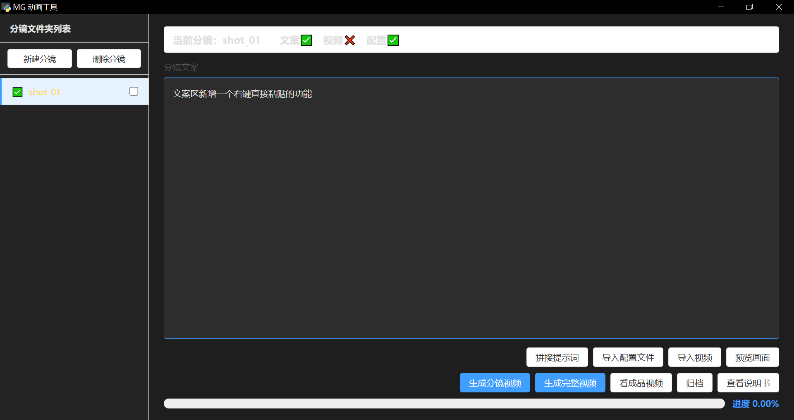
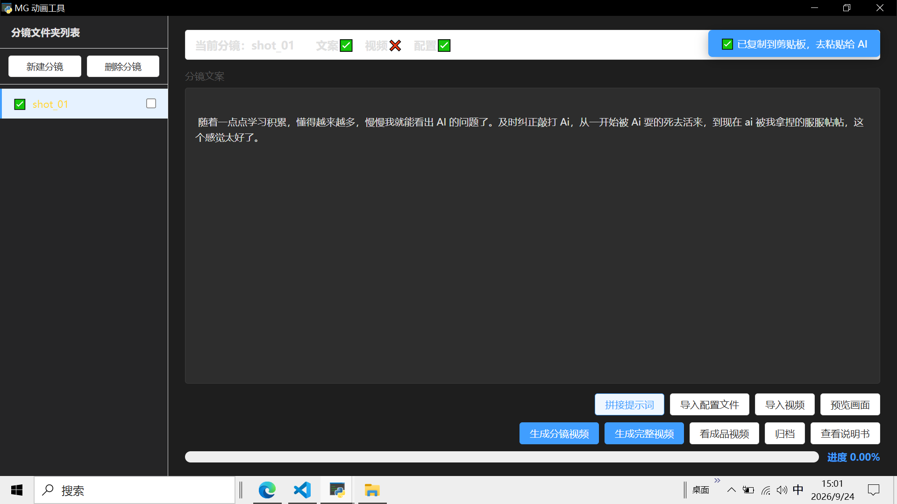
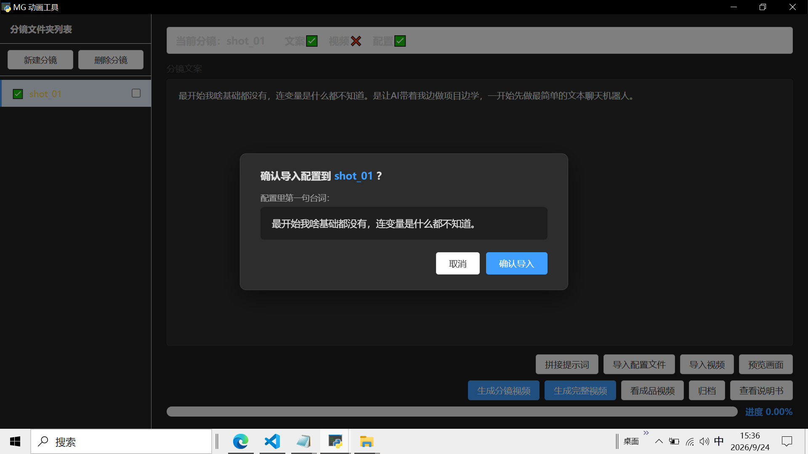
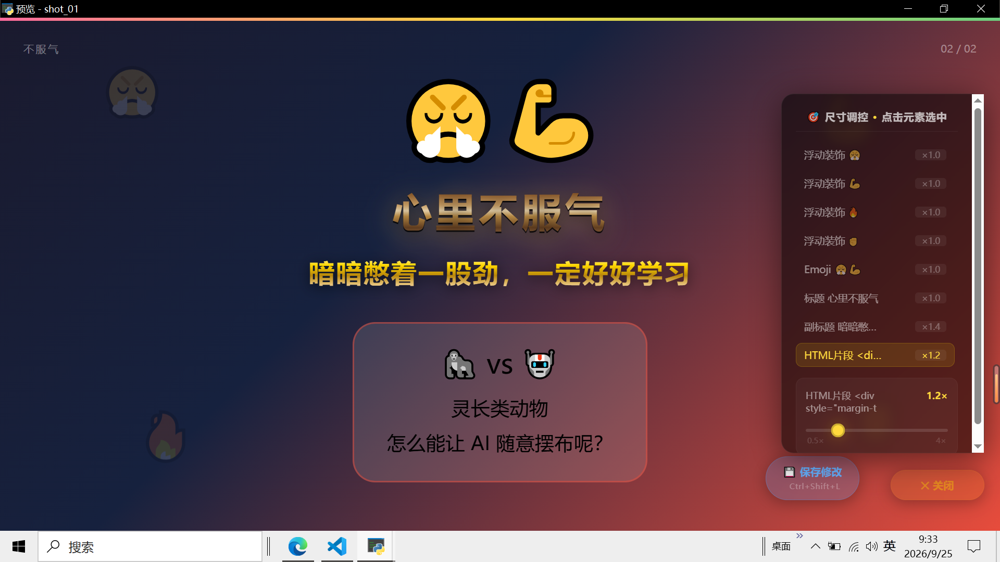
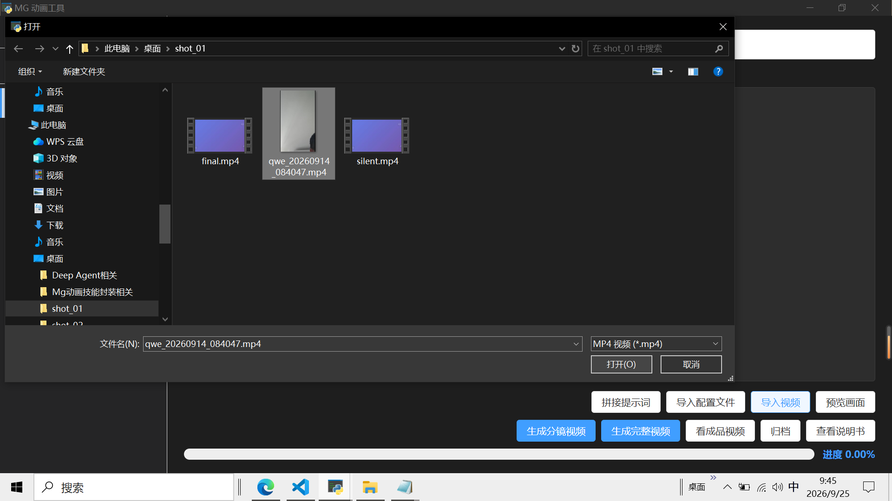
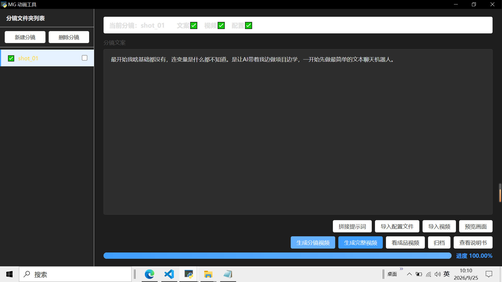

这个工具干啥的：帮助不会写代码的用户，借助免费 AI 设计动画，利用这个工具加工，制作音画同步的 MG 动画视频。
工作模式：一个分镜一个分镜地做。做好一个看一个，全部满意后，再合并成一个完整视频。
第一次打开可能会弹窗：Windows 可能会弹出"你要允许此应用对你的设备进行更改吗？"，点 "是" 即可。这是安装微软运行库，安全，只弹一次。
打开工具，你会看到左右两块：
shot_01（它就是一个分镜的意思）。
把这段分镜的文案，打进右边的文案框里。
文案写完，点右下角的 「拼接提示词」 按钮。
工具会自动把一段"指令"复制到你的剪贴板，界面右上角会弹出提示"已复制,去粘贴给AI"。

打开一个免费 AI 对话框（作者推荐DeepSeek）。
点了拼接提示词,就已经完成了复制动作到了AI对话框直接粘贴，按回车发送。
AI 会生成一份配置文件（以 window.SCENES = [ 开头）。
把 AI 生成的配置全部复制。复制这一步格外注意，不要把 AI 说的废话复制进去。开头是 window.SCENES，结尾是 ];（中括号和分号）。注意核对。
回到工具，点 「导入配置文件」。
界面会弹一个确认框。

点 「预览画面」，会弹出一个预览窗口，自动播放这段动画。也可以点击鼠标快速切换下个一画面。
点右下角的 「调控面板」 按钮，调出尺寸面板。

面板里会列出当前画面所有的元素。点一下元素，拖动滑块，就能调整它的大小。
点 「导入视频」，选一个你录好的视频文件。
工具会把它复制进这个分镜的文件夹里。

关于录音，几点注意事项：
界面顶部的文案 配置 视频 都打上了绿色对勾,说明生成视频的3个必备调节都具备了
点 「生成分镜视频」，工具开始自动处理。
跑完会看到"生成完成"的提示，进度条走到 100%。

所有分镜都做完以后，点 「生成完整视频」。
工具会把所有分镜的视频按顺序拼起来。
拼完后，点 「看成品视频」，就能打开文件夹，看到所有成品。
文件夹里会有：
final_video_最终完整音画同步视频.mp4 —— 完整大视频shot_01_分镜音画同步视频.mp4、shot_02_... —— 每个分镜的单独视频视频没问题了，点 「归档」。
工具会弹出一个小窗口，让你给这次项目起个名字（默认是日期时间）。
确认后，这次做的所有素材和成品，会移动到 archives/ 文件夹里，收好。
同时，工具会自动新建一个干净的 shot_01，让你开始下一个视频。
archives 翻。
window.SCENES = [ 开头。如果不是，让它重新写一份。